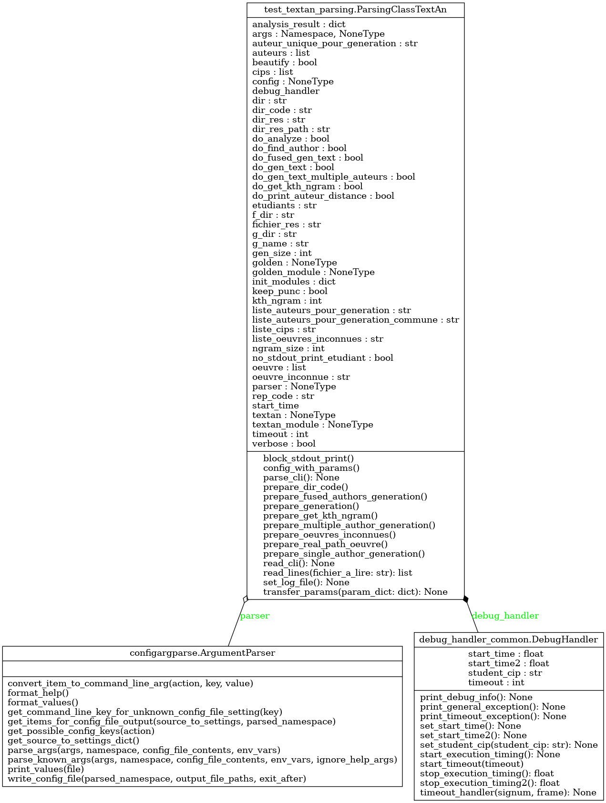

Module test_textan_parsing
Diagramme de classe
{kind=link}
Code du module
Code utilitaire pour lire et interpréter la ligne de commande pour test_textan.py
Copyright 2018-2025 F. Mailhot et Université de Sherbrooke
- class test_textan_parsing.ParsingClassTextAn[source]
Bases :
object- Classe qui effectue la lecture des paramètres d’exécution :
Permet de lire le fichier de configuration (test_textan_config.yml)
Permet de lire les paramètres de la ligne de commande
Les paramètres de la ligne de commande ont priorité sur ceux du fichier de configuration
Copyright 2024-2025, F. Mailhot et Université de Sherbrooke
Constructeur pour la classe ParsingClassTestTextAn. Initialisation de l’ensemble des éléments requis
- Args :
- (void)Le constructeur lit :
le fichier de configuration, la ligne de commande, et ajuste l’état de l’objet ParsingClassTextAn en conséquence
- Returns :
(void) : Au retour, la nouvelle instance de test est prête à être utilisée
- block_stdout_print()[source]
- Désactive l’impression dans le code étudiant :
- Utilise la classe PrintUtil pour effectuer la désactivation :
Conserve sys.stdout pour rétablir au besoin
Remplace stdout par /dev/null (impression inactive)
- Returns :
(void) : Au retour, l’impression est désactivée (si demandé)
- config_with_params()[source]
Prépare l’instance de test pour qu’elle effectue toutes les actions requises :
- Returns :
(void) : Au retour, l’instance de test est prête à être exécutée
- parse_cli() None[source]
- Utilise le module configargparse pour :
Enregistrer les commandes à reconnaître
Lire le fichier de configuration
Lire la ligne de commande
Créer le champ self.args qui récupère la structure produite par la lecture des paramètres
- Returns :
void : Au retour, toutes les commandes reconnues sont comprises dans self.args
- prepare_dir_code()[source]
Ajoute le répertoire de code au « path » :
- Returns :
(void) : Au retour, le répertoire de code est accessible
- prepare_fused_authors_generation()[source]
- Indique si la génération de textes d’auteurs fusionnés doit être effectuée :
Les statistiques de l’ensemble des auteurs identifiés seront combinées
- Returns :
(void) : Au retour, la liste d’auteurs est configurée, les attributs sont configurés
- prepare_generation()[source]
- Prépare la génération de textes aléatoires :
Configuration pour génération à partir des statistiques d’un auteur unique
Ou bien génération de textes multiples pour tous les auteurs identifiés
Ou bien génération avec des statistiques combinées de plusieurs auteurs
- Returns :
(void) : Au retour, la liste d’auteurs et les attributs adéquats sont configurés
- prepare_get_kth_ngram()[source]
Indique si le calcul du k-ième n-gramme doit être effectué :
- Returns :
(void) : Au retour, l’attribut est configuré
- prepare_multiple_author_generation()[source]
Indique si la génération de textes multiples (un par auteur identifié) doit être effectuée :
- Returns :
(void) : Au retour, la liste d’auteurs est configurée
- prepare_oeuvres_inconnues()[source]
Prépare la liste des oeuvres dont l’auteur doit être identifié :
- Returns :
(void) : Au retour, les chemins vers les oeuvres sont trouvés
- prepare_real_path_oeuvre()[source]
Trouve le chemin vers les oeuvres dont les auteurs doivent être identifiés :
- Returns :
(void) : Au retour, les chemins sont trouvés et ajoutés en attribut
- prepare_single_author_generation()[source]
Indique si la génération de texte (un seul auteur) doit être effectuée :
- Returns :
(void) : Au retour, l’attribut est configuré
- read_cli() None[source]
- Initialise l’objet en interprétant le fichier de configuration et la ligne de commande :
Lit le fichier de configuration
Lit la ligne de commande
Modifie tous les champs qui y sont définis
- Returns :
(void) : Au retour, toutes les commandes reconnues sont comprises dans self.args
- static read_lines(fichier_a_lire: str) list[source]
Lit les lignes d’un fichier et retourne un tableau contenant une entrée par ligne :
- Args :
fichier_a_lire (str) : Nom d’un fichier contenant une chaîne de caractères par ligne
- Returns :
list : retourne une liste avec une entrée par ligne (une chaîne de caractères par ligne)
Note
Documentation créée le 20 févr. 2025.